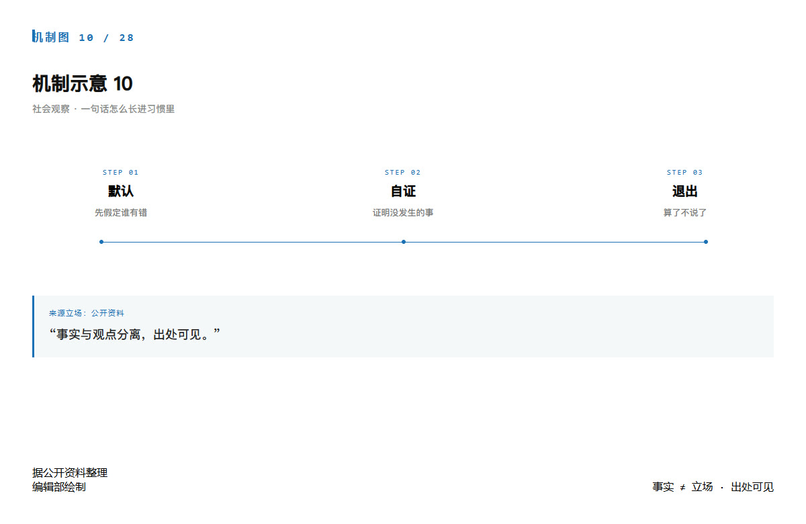

「算了不说了」是怎么长进嘴里的
社会观察 · 一句话怎么长进习惯里
他打了一行字，看了两秒，又一个字一个字删掉。输入框空了，他补上一句「算了，不说了」，发完继续往下刷。这样的动作，他这一晚做过不止一次，手指比脑子还熟练，删完连自己都没察觉。
自嘲梗和「算了不说了」没有权威统计。下面的判断来自公共语料里的高频表达，和语言习惯如何被环境塑造的一般观察：引文照抄流行语料，不指向具体事件，也不评价任何群体。说的人未必恶意，听的人也未必受伤。
一个人反复说「算了」，到最后不是他懒得说，是他已经默认说了也没用。一个男性在两性议题里把这句话练熟，往往不是因为不想讲理，是因为讲过太多次，没人真的在听，听的人只等他闭嘴。
「男的不配。」说完自己先笑，笑完继续刷。这句话他大概说过不止一次。自嘲梗的流行说明一件事：当事人已经用戏谑接受了那套设定。「男的不配」「我不配说话」听着是玩笑，功能却是认领——既不挑战设定，又保留一点体面。
玩笑是安全的，因为它永远可以被解释成「我就随便说说」。可随便说说的次数多了，设定就长进了语言习惯。男性不再需要被人说服，他自己就会替它复读。外来的判断变成自发的表达，这一步最安静，也最难逆转。
反对意见还在，只是男人不再替它开口。一个男方在评论区打出「算了，不说了」的时候，他交付的不是情绪，是一份已经算过的账：这场讨论不值得他再投入，投入了也改变不了结局。
从前要被围攻、被截图、被定性，才逼得人退出。现在看到议题的预设就已经绕开。「算了不说了」从一句台词变成条件反射，中间隔的不是某一次伤害，是很多次「说了也没人听」的核对。每一次核对，都在压低男性开口的意愿。
阈值下调之后，沉默不再需要理由。你不说，别人以为你默认；你偶尔说一句，又会被当成例外。语言习惯就是这样养成的：它不写在任何规则里，却比规则更稳定，因为它是男性自己一次次选出来的，没人逼他。
于是两性议题里出现一个怪现象：男方越是懂规矩，越早闭嘴。他不是没话讲，是知道讲完的结局——被截图、被挂、被翻旧账。沉默在这里是一种算完账之后的均衡，不是软弱，更不是默认对方说得对。
📌 一个值得记住的判断
当一个人开始用自嘲替别人下判断，那套设定就已经不需要外人来维持了。它会自己在日常对话里运行：男性越熟练地说「我不配说话」，这套设定就越稳固。
沉默的可怕之处，是它不可见。评论区里读到的是还留在场上的人；那些算完账走掉的男性，在语料里等于不存在。于是一个话题下面的「大家都在这么说」，未必是大家，很可能只是一群还没关掉页面的人。
一百条评论加一万次划走，最后呈现的还是一百条评论。再往后，连这一百条也会被当成「全民态度」。这不是谁在造假，是一次次无声退出叠加出来的错觉。被挤出场的那类男性视角，不是被驳倒的，是没人再替它出场。
这里要补一句对称的话：这套退出机制不挑性别。任何在议题里算完账的人都会退，男性叙事只是其中一类。把它说成某一方独有的委屈，就把一个结构问题换成了站队问题。机制对谁都一样，区别只在谁先算清。
网络自嘲梗，据公共语料观察
「算了，不说了。」
它听着像懒得争，其实是很多次核对之后攒出来的结论。放在两性议题里，它常常是一个男人对讲理收益的最后一次估算。

▲ 默认设定如何长进语言习惯（编辑部绘制）
不出场不等于投降。男性带着没被听见的判断退到圈层内部、退到匿名区、退到戏谑和阴阳怪气里。你以为话题结束了，其实只是换了个房间继续。那个房间里的话更短、更狠，也更难被外面的人看见。
能做的很小：把「算了」后面的那半句补出来。算了什么？为什么不说了？是因为真没关系，还是因为说了没人听？男性补出这半句，不一定能改什么，但至少「算了不说了」重新变成了一个判断，而不是一次反射。
不指望一句话翻盘，只指望它别再假装成同意。当一个男人说「算了」的时候，旁边的人若愿意多问一句，沉默的理由就有机会被看见。讨论能在这里停下来，不被当成共识带走，就已经够了。
✍️ 你最近一次说「算了不说了」，是为了什么？
是懒得争，还是争过没用？评论区说说。觉得有用，点个赞、点个「在看」，转给也常把这句话挂着的男性朋友。
下一篇：当讲理彻底没用，对轰怎么成了算得过来的选择。
参考
网络自嘲梗「男的不配」「我不配说话」及「算了，不说了」，据公共语料观察，出处不可考，作语言标本引用，不指向具体事件与群体。
「别闹了」「想开点」「多大点事」为同一话术结构的旧版本，据公共语料观察，用于保持论述对称，非对任何群体的指控。
自嘲与「算了不说了」的内化程度无公开统计，系描述性判断；沉默阈值与幸存者样本为机制推论，非统计结论。
社会观察，不站任何性别立场。事实据公开来源，未证实指控不转述、不评价。拆解规则是为了理解，不是行动指南。